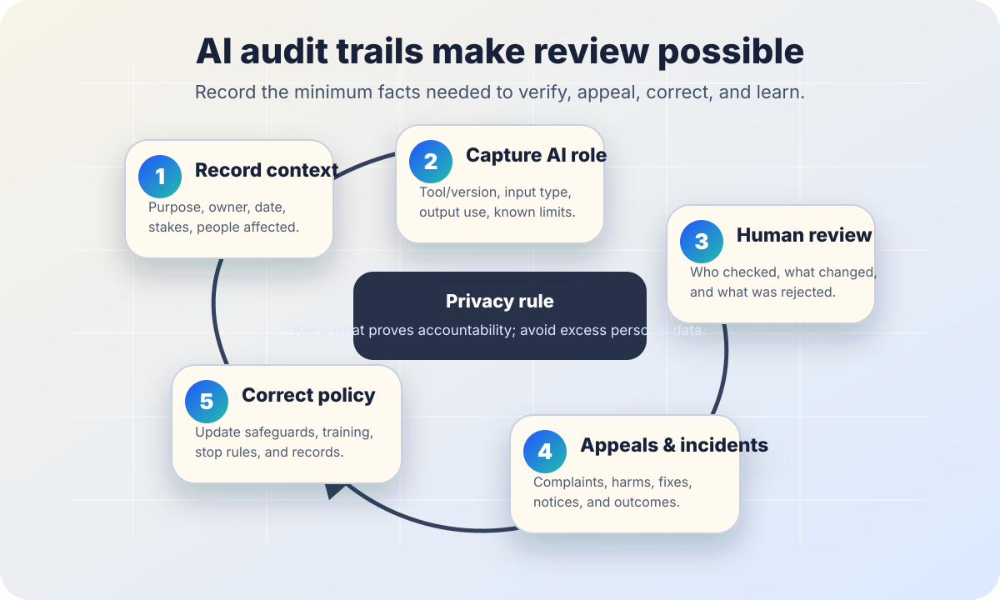

AI accountability
AI audit trail basics.
Use this when a school, workplace, public office, newsroom, nonprofit, or community team needs to know what to record about AI-assisted work so decisions, incidents, appeals, and corrections can be checked later.
The short answer
An AI audit trail is the minimum reliable record that lets a responsible person reconstruct what AI was used, why it was used, what it influenced, who reviewed it, what changed, and what happened when something went wrong.
Good records make oversight possible. Bad records either hide the AI role or collect so much personal detail that the record becomes a new privacy risk. The goal is accountability with data minimization: keep what is needed to verify, appeal, correct, and learn; avoid storing sensitive content just because it is easy.

Why audit trails matter
The NIST AI Risk Management Framework describes trustworthy AI work through functions such as govern, map, measure, and manage, and through characteristics such as accountability, transparency, privacy, safety, validity, reliability, and fairness. Those ideas are hard to practice if nobody can reconstruct which system was used, what it affected, and who had authority to accept or override it.
NIST’s Generative AI Profile also emphasizes documentation, monitoring, incident response, provenance, and risk management for generative AI. The European Commission’s AI Act overview notes that the EU framework includes obligations around transparency, human oversight, accuracy, and record keeping for some higher-risk systems. The UK Information Commissioner’s Office guidance on AI and data protection emphasizes accountability and data protection principles such as data minimization.
Use these sources as public-interest guidance, not legal advice. Specific recordkeeping duties vary by country, sector, contract, privacy law, labor rules, public-records rules, age group, disability access needs, and whether the AI system is high-risk or used in a sensitive context.
What to record
1. The use case
Purpose, owner, date, setting, people affected, and whether the AI output is advice, draft content, screening, scoring, translation, summarization, classification, or decision support.
2. The AI system
Tool name, provider, version if available, model or configuration if known, enabled features, data sources, and known limits or warnings from the vendor or internal review.
3. The input category
Record the type of input, not automatically the raw content: for example, “student essay,” “meeting transcript,” “benefits appeal,” or “public comment batch.”
4. The output role
What the AI output influenced: a draft, summary, recommendation, risk flag, translation, customer response, eligibility review, classroom feedback, or final decision.
5. Human review
Who checked the output, what they were qualified to check, what they changed, what they rejected, and whether they had authority to override the AI-assisted result.
6. Outcome and follow-up
Final action, notice or disclosure given, appeal path offered, incident or complaint received, correction made, and what policy or training changed afterward.
A minimum audit trail template
| Field | Plain-language prompt | Privacy guardrail |
|---|---|---|
| Purpose | What job was AI supposed to help with? | Avoid vague labels like “efficiency.” Name the real workflow. |
| Stakes | Could this affect rights, access, safety, finances, education, employment, housing, health, or legal status? | Higher stakes need stronger review and retention rules. |
| System | Which AI tool, provider, version, feature, or configuration was used? | Do not paste API keys, account IDs, private URLs, or credentials. |
| Input category | What kind of information went into the system? | Store categories or references when possible; avoid duplicating sensitive raw content. |
| Output role | Was the output a draft, recommendation, score, summary, translation, or decision support? | Do not let “human used AI” hide whether AI shaped the outcome. |
| Human review | Who reviewed it, what did they check, and what did they change? | Use role names where appropriate; avoid exposing unnecessary personal details. |
| Final outcome | What happened after review? | Link to the official record if needed instead of copying sensitive details. |
| Appeal or incident | Was there a complaint, appeal, harm report, correction, or near miss? | Separate public lessons from private affected-person details. |
What not to collect by default
- Raw prompts, documents, transcripts, student work, medical details, legal facts, or personnel records when a category, hash, redacted excerpt, or secure reference is enough.
- Credentials, API keys, access tokens, internal account IDs, private logs, private URLs, or hidden system prompts that would create security risk if exposed.
- More personal data than the review actually needs. “We might want it later” is not a sufficient reason to keep sensitive content forever.
- Unreviewed AI explanations that sound authoritative but do not match how the system actually works.
- Records that punish people for reporting errors. Audit trails should make correction safer, not retaliation easier.
Starter language for a small team
AI use record: We used [tool/feature] on [date] to help with [purpose]. The AI output was used as [draft/recommendation/summary/translation/etc.], not as an unchecked final decision. [Role/name] reviewed the output for [accuracy, fairness, accessibility, policy fit, source support, privacy]. The final action was [outcome]. If a person was affected, the available correction or appeal path is [path]. We retained [record fields] and did not retain [sensitive content not needed for review].
For high-stakes uses, this starter language is not enough by itself. Add legal, privacy, accessibility, security, labor, civil-rights, and affected-community review before deployment.
Add these fields for incidents and appeals
- Trigger: What raised concern — user complaint, staff report, monitoring result, media question, audit sample, or near miss?
- Impact: Who may have been affected and what harm or barrier might have occurred?
- Pause decision: Was the AI use paused, narrowed, or allowed to continue with safeguards? Who decided?
- Human re-check: What did a qualified person review without relying on the AI output as the only evidence?
- Notice: What did affected people need to know, in what language and format, and by when?
- Correction: What was fixed for the person, the workflow, the policy, the vendor configuration, the training material, or the stop rule?
- Lesson: What will be checked next time so the same failure is easier to catch?
How often to review records
Choose a review cadence based on stakes, volume, novelty, and complaint patterns. A low-risk drafting helper might need occasional spot checks. A system that influences benefits, discipline, hiring, housing, health, safety, or legal status needs stronger monitoring, documented human review, and a clear escalation path before harm becomes final.
A simple cadence is: review new uses before launch; sample records after the first week or first meaningful batch; review monthly while the use is new; review after any vendor, model, policy, or workflow change; and always review after an incident, appeal, or credible complaint.
Bad signs
- Warning: Nobody can name who owns the AI use or who can stop it.
- Warning: The team records raw sensitive inputs but not review, outcome, appeal, or correction.
- Warning: The record says “AI assisted” but not what the AI changed or influenced.
- Warning: People are told a human reviewed the result, but the reviewer cannot override the AI-assisted output in practice.
- Warning: The only evidence is a vendor dashboard that the organization cannot export, audit, or explain to affected people.
Starter checklist
- □ Name each AI use case and owner.
- □ Decide which fields are required before the tool is used.
- □ Record input categories instead of raw sensitive content whenever possible.
- □ Document the AI output’s role and the human review step.
- □ Link audit records to consent, disclosure, incident response, and appeal paths.
- □ Set retention and access rules so records do not become a privacy or security hazard.
- □ Review records after complaints, model changes, workflow changes, and sampled high-stakes decisions.
Sources and further reading
- NIST — AI Risk Management Framework.
- NIST — Artificial Intelligence Risk Management Framework (AI RMF 1.0).
- NIST — Artificial Intelligence Risk Management Framework: Generative Artificial Intelligence Profile (NIST AI 600-1).
- European Commission — AI Act overview.
- UK Information Commissioner’s Office — Guidance on AI and data protection.